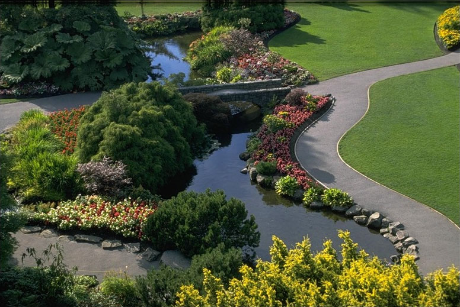

|
|

Увиденная природа есть ландшафт; ландшафт, в котором первопроходцы проложили хотя бы одну тропу, - это уже культурный ландшафт, поскольку места в нем оценены и предуготовлены к освоению.
Преображение человеком природы делает рукотворный ландшафт феноменом культуры.
Культурный ландшафт – освоенное, социальное, национальное историческое пространство. Культурный ландшафт как система функционален, поскольку обеспечивает поддержание всего комплекса условий для жизни человека. Несмотря на достижения научно-технического прогресса по большому счету средой обитания человека по-прежнему остается тончайшая ландшафтная «пленка» биосферы мощностью от верхушек крон самых высоких деревьев до ближайшего к поверхности земли водоносного горизонта.
Функционирование культурного ландшафта как системы тесно связано с её открытостью, предполагающей возможность «входа» - управляющего воздействия, к каковым могут быть отнесены все виды хозяйственной активности человека. В идеале необходимо предварительно изучить законы природы, чтобы понимать последствия возможных вмешательств в ход природных процессов не выполняя их реально, не вызывая при этом (сознательно или поневоле) экологические кризисы. С этих позиций можно утверждать, что природа для человека – сложная система, в модели которой – культурном ландшафте – как бы все время ощущается недостаток информации для эффективного управления. Осваивая пространство, формируя культурный ландшафт, человек познает законы природы; стремясь к построению более совершенной среды обитания, учится сотворчеству с нею. В этом смысле освоение территории и создание культурного ландшафта – это творческий процесс, весьма далекий от завершения и в настоящее время.
Открытость культурного ландшафта как модели позволяет осознанно воздействовать на её структуру и функционирование – в этом обстоятельстве заключена возможность (и необходимость) экологической организации территории, в том числе средствами ландшафтного планирования (проектирования).
Ещё более важно то обстоятельство, что регулирование напряженности структуры геоэкосистемы может происходить и путем целенаправленной трансформации самих интересов, а это уже задача культуры.
Колбовский Е. Ю. Ландшафтное планирование :
учебное пособие для студ. высш. учеб. заведений / - М. : Издательский центр "Академия", 2008.
В современную эпоху, когда цивилизация переживает экологический кризис, на международном уровне разрабатывается стратегия защиты окружающей среды. Одним из возможных путей выхода из кризиса является сохранение, восстановление и развитие культурного ландшафта.
В настоящее время понятие "культурный ландшафт" имеет три определения:
- В традициях русской географической науки оно означает "хороший" антропогенный ландшафт, изменённый человеком по определённой программе и обладающий высокими эстетическими и функциональными качествами.
- Второе определение характеризует культурный ландшафт как некую местность, которая в течение длительного исторического периода была местом обитания определённой группы людей, являющихся носителями специфических культурных ценностей.
- В третьем случае под культурным ландшафтом понимают ландшафт, в формировании и развитии которого активную роль играют духовные и интеллектуальные ценности, хранимые и передаваемые от поколения к поколению в виде информации, являющиеся его частью и испытывающие на себе воздействие других, материальных компонентов ландшафта.
Статус культурного ландшафта как объекта наследия был зафиксирован в документах ЮНЕСКО в 1992 году, хотя тенденции к его появлению появились уже 20 лет назад. Тогда, в 1972 году, была принята Конвенция о всемирном наследии, в которой в качестве объекта охраны рассматривались достопримечательные места как результат сотворчества человека и Природы.
Важнейшей частью культурного ландшафта является культурное наследие, сохраняемое в виде предметов или информации. В случае если оно является доминирующим фактором, определяя весь жизненный уклад населения данной местности, являясь условием формирования специфической архитектуры, археологии, этнологии, топонимики, фольклора и в целом всех сторон культурной жизни - в этом случае культурный ландшафт сам становится объектом наследия. Заонежская архитектура и их природное окружение - прекрасный тому пример! Удивительные по красоте, они ярко выражают самобытную культуру Заонежья Карелии, а именно характер взаимоотношения человека и Природы. При этом сам Кижский Погост является плодом длительных творческих поисков строителей того образа, который смог бы выразить в полной мере благодарность человека Природе за её щедрые плоды, которыми она наделила этот благодатный край!
До 1992 года согласно документам ЮНЕСКО объекты всемирного наследия распределялись по трём категориям: объекты культурного наследия, объекты природного наследия и (смешанная группа). Введённое понятие "культурный ландшафт" было формально отнесено к категории "культурное наследие", и рекомендуемые для включения в Список всемирного наследия объекты проходят процедуру оценки только на соответствие критериям ценности объектов культурного наследия, исключая природные ценности. Это послужило причиной появления многих противоречий, так как в объектах всемирного наследия очень часто трудно отделить культурную составляющую от природной. Само понятие "культурный ландшафт" означает, что он является результатом совместного творчества человека и природы и отражает процессы эволюции общества, происходящие под влиянием природных (!), социальных, экономических и культурных процессов. А в качестве объекта наследия к культурному ландшафту предъявляются ещё и дополнительные требования. Так, он должен репрезентативно представлять соответствующий геокультурный район и с высокой степенью выразительности демонстрировать отличительные черты такого региона, в том числе характер взаимоотношения человека и природы, например, традиционные технологии природопользования, учитывающего местные экологические особенности и ограничения. Кроме того, во многих культурных ландшафтах заключена семантика особого духовного (сакрального) отношения к природе.
В связи с этим с 1992 года стали проводиться процедуры по реноминации объектов всемирного наследия. Так, на 1 января 2000 года в списке объектов всемирного наследия значилось 638 единиц из 112 стран, из которых 480 относились к культурному наследию, 128 - к природному, 30 - к смешанной группе. Из этого списка было отобрано 13 объектов, отвечающих требованиям культурного ландшафта. 10 из них прежде относились к категории "культурное наследие", 3 - к смешанной группе. Процедура реноминации идёт в отношении исторического медеплавильного центра северной Скандинавии города Рерос, ранее относившегося к объектам культурного наследия и проходившего по категории "группа зданий/исторический город". Для более полного отражения исторических процессов, происходящих в городе и его окрестностях, предлагается включить в состав этого объекта Всемирного наследия бывшие прииски, гидротехнические системы и сельскохозяйственные угодья, придав ему статус культурного ландшафта. Также возможна реноминация и некоторых объектов природного наследия. Так, самый крупный памятник Всемирного природного наследия мСочиой парк Большой Барьерный Риф, расположенный в Австралии, может рассматриваться в качестве культурного ландшафта, так как включает в себя, наряду с природными достопримечательностями, и социо-культурные образования, такие как рыбацкие поселения и мСочиие порты, являясь примером взаимоотношений человека и природы.
В конце 1999 года в список Всемирного наследия было включено ещё 48 объектов, один из них - местность Сукур в Нигерии - получил статус "культурного ландшафта". Хотя при оценке ещё 8 объектов отмечалась уникальность и выдающееся значение их культурного ландшафта, например, в Национальном парке Хортобэги в Венгрии.
В последнее время претендентов на получение нового статуса становится всё больше и больше. Так, например, от Скандинавии в предварительный перечень новых, рекомендуемых для включения в Список всемирного наследия, объектов представлено 20 единиц, из них 9 могут получить статус культурного ландшафта. Хорошие перспективы по расширению списка "культурных ландшафтов" имеются у Южной Америки. Так, культурный ландшафт уже представлен в составе категории "объекты культурного и природного наследия" в Перу, а также он может быть заявлен в качестве самостоятельной номинации от таких стран, как Чили и Венесуэла. Из российских объектов на получение статуса культурного ландшафта предлагаются Кенозерский национальный парк (по одной из классификаций - в качестве естественно сформировавшегося развивающегося ландшафта), музеи-заповедники Л.Н.Толстого "Ясная Поляна" и "Бородино" (как ассоциативный культурный ландшафт). Реноминации подлежат Соловецкий музей-заповедник с его природным окружением (как естественно сформировавшийся реликтовый ландшафт) и дворцово-парковые ансамбли окрестностей Санкт-Петербурга (в качестве целенаправленно созданного ландшафта).
В целом, в настоящее время существует два подхода к решению проблемы оценки культурных ландшафтов. Один подход - это механическое соединение критериев ценности культурного и природного наследия и рассмотрение в качестве объекта наследия только культурного ландшафта с упразднением предыдущих номинаций культурного и природного наследия. Второй - адаптация данных критериев к задачам оценки культурного ландшафта с рассмотрением его в качестве самостоятельной номинации как природно-культурной целостности с сохранением ранее существовавших номинаций культурного и природного наследия.
Как объект наследия ландшафт должен обладать тремя важными свойствами, о чём зафиксировано в документах ЮНЕСКО - универсальностью, аутентичностью и целостностью. Обладающий универсальностью ландшафт наиболее полно отражает взаимодействие человека и природы в трёх контекстах - географическом (приспособление к местным экологическим условиям), историческом (исторические изменения характера природопользования) и культурном (проявление духовного отношения человека к Природе). Вторым важным свойством культурного ландшафта является его целостность, то есть завершённость, единство, гармоничность и сохранность всех его составляющих - и материальных объектов, и ментальных свойств, и традиций природопользования. Под аутентичностью культурного ландшафта понимается его подлинность, достоверность, неразрывно связанная со свойством целостности.
В настоящее время существует несколько классификационных признаков культурных ландшафтов:
- По степени культурных преобразований и по жизнеспособности ландшафта (целенаправленно созданные, естественно сформировавшиеся и ассоциативные ландшафты)
- По исторической функции ландшафта (ландшафты сельскохозяйственные, промысловые, сакральные, заповедные, мемориальные и т.д.). В данном случае исторические функции ландшафта определяют его специфические особенности. Функциональная ориентация ландшафтов указывает на воспроизводящие процессы и действия, необходимые для поддержания их в "рабочем" состоянии.
- По типу культуры (ландшафты усадебные, дворцово-парковые, монастырские, горно-заводские, военно-исторические, сельские и городские). В данном случае типы культуры обладают или обладали собственным "почерком" освоения ландшафта. В соответствии с этими типами культур образуются чётко выраженные типы ландшафта: усадебный, дворцово-парковый, монастырский, горно-заводской, военно-исторический (ландшафты полей сражений), архаичный или традиционный сельский (крестьянская культура),
городской (исторические кварталы).
- По природным характеристикам. В системе типологий культурного ландшафта наряду с культурологическими основаниями обязательно должны присутствовать и природные, поскольку культурный ландшафт - это результат сотворчества человека и природы. Эти основания должны быть существенны с позиций отношения человека и природы. Среди таких оснований чаще всего называют: гипсометрический уровень и рельеф (ландшафты низменные, равнинные, холмистые, грядовые, горные, нагорные и т.д.), характер растительности (лесной, луговой, болотный, степной и пр.), отношение к водотокам и акваториям (примСочиий, приозёрный, приречный), генезис и морфология (водно-ледниковые, дюнные, террасовые, долинные ландшафты и т.д.). Как правило, выбираются те характеристики, которые наиболее весомы в процессе созидания культурного ландшафта.
В документах ЮНЕСКО для оценки культурных ландшафтов применяется типология культурных ландшафтов, основанная на таких классификационных признаках, как степень культурных преобразований и жизнеспособность ландшафта.
Согласно ей существует три основные категории культурных ландшафтов:
- Целенаправленно созданные (рукотворные) ландшафты.
К данной категории прежде всего относятся объекты ландшафтной архитектуры - парки и сады. Они создаются по замыслу художника и их характерной особенностью является определённая планировочная композиция. В своём развитии данные объекты подчинены целеполагающей деятельности человека, в связи с чем представляют наибольший интерес в культурологическом аспекте. Сугубо функциональное предназначение отдельных элементов культурного ландшафта садов и парков всегда сообразуется с их эстетическими качествами. Различают три субкатегории целенаправленно созданных ландшафтов:
- Ископаемые - как правило, хранят в себе памятники археологического или палеонтологического наследия. Это могут быть остатки древних городов, курганные комплексы, оазисы древних или сменивших географический ареал культурных общностей, сформировавших облик ландшафта, но безвозвратно ушедших или утративших функции носителя культурной традиции.
- Реликтовые - в России это усадебные, дворцово-парковые и некоторые монастырские ландшафты.
- Развивающиеся - ландшафты, продолжающие своё существование благодаря деятельности человека, направленной на восстановление, сохранение и развитие его объектов и функций.
- Естественно сформировавшиеся ландшафты
В ландшафтах такого типа природные процессы в результате длительных, целенаправленных воздействий претерпевают определённые изменения. Природные компоненты ландшафта адаптируются к этим изменениям, в результате чего формируется ландшафтный комплекс, где сложным образом переплетаются процессы природной эволюции и целенаправленной деятельности. Примером могут служить многие сельские и исторические индустриальные ландшафты. Такие ландшафты чаще всего формируются благодаря аборигенным (туземным) экофильным экстенсивным культурам, находящимся в гармонии с окружающей их природой и идентифицирующим свой микрокосм как часть природы.
Различают три субкатегории ландшафтов:
- Ископаемые - археологические ландшафты, хранящие в себе свидетельства истории, выявленные путём раскопок, и являющиеся в настоящее время экспозиционным пространством своеобразного "музея под открытым небом", т.е. вырванным из активной социально-экономической жизни.
- Реликтовые - в отличие от ископаемых такие ландшафты продолжают жить и развиваться, но время их расцвета уже осталось в прошлом. В основном это "угасающие" ландшафты, оказавшиеся в окружении чуждой им культурной среды или под воздействием изменившихся природных условий. Носители культуры, создавшие этот ландшафт, уже исчезли, но сам ландшафт сохраняется в прежних своих формах и паллиативных функциях усилиями представителей другой культуры, использующих его для своих собственных целей.
- Развивающиеся - такие ландшафты могут быть связаны с географически детерминированными аборигенными культурами, такими как культуры американских индейцев, африканских племён, северных евразийских народов. Эти культуры являются уязвимыми в силу своей зависимости от природных свойств ландшафта, и его сохранение - важнейшее условие их существования.
- Ассоциативные ландшафты
К этой категории относятся ландшафты с сильными религиозными, художественными и культурными ассоциациями, а также чисто природные ландшафты без каких-либо материальных объектов культурного наследия - мемориальные ландшафты, хранящие память о важнейших событиях или великих личностях, ландшафты, нашедшие отражение в творчестве выдающихся деятелей искусства, и сакральные ландшафты. Ассоциативные ландшафты могут быть включены в историко-культурное пространство без изменения их естественной ритмики и эволюции, в качестве памятных мест, мест творчества, сакральных местностей и т.д. При этом культурная составляющая часто представлена не в материальной, а в ментальной форме, по ассоциации объекта с каким-либо феноменом культуры.
В целом же, для более полной характеристики ландшафта лучше проводить его типологию по нескольким классификационным признакам. Благодаря этому повысится уровень систематизации ландшафтного наследия и наметятся новые пути решения задач по управлению ландшафтами.
Концепция культурного ландшафта является принципиально новым подходом к сохранению культурного и природного наследия. Поскольку в ней важное место отводится сохранению природного ландшафта, то её некоторые идеи легли в основу концепции биосферных резерватов, принятой ЮНЕСКО в 1995 году и получившей название "Севильская стратегия биосферных резерватов". Суть биосферного подхода - это учёт взаимосвязи между сохранением биоразнообразия и потребностями развития местного населения, что является ключевым фактором эффективного управления национальными парками, природными резерватами и другими особо охраняемыми территориями. Основной целью биосферных резерватов является сохранение традиционного образа жизни местного населения, включая традиции природопользования и сакральную деятельность; сохранение и практическое применение накопленных веками знаний в различных областях - метеорологической, биологической, строительной, сельскохозяйственной, биологической, кулинарной, медицинской и т.п.; поддержание устойчивости природной и культурной среды; обеспечение продуктивного взаимодействия между природным и культурным разнообразием.
При этом за биосферными резерватами закреплены 3 основные функции:
- Консервационная - сохранение биоразнообразия, а также ландшафтного (включая культурное) разнообразия (!);
- Функция развития - регулирование взаимоотношений между природой и человеком на всех уровнях экосистем - от относительно нетронутых природных комплексов до урбанизированных территорий;
- Функция логистики - экологическое образование и профессиональная подготовка, научные исследования и мониторинг.
Таким образом, биосферные резерваты, как и культурные ландшафты, являются моделью гармоничных взаимоотношений между человеком и Природой, способствующих устойчивому развитию цивилизации. Отличие же этих двух форм сохранения культурного и природного наследия заключается в том, что концепция культурного ландшафта имеет более высокий уровень понимания современных проблем человеческой цивилизации, главным образом экологических. Её сутью является осознание человечеством важности восстановления и сохранения экологического баланса между современной цивилизацией и Природой - единственного условия самого существования социума. Подтверждением этому могут служить проведённые учёными эксперименты по моделированию различных экологических катаклизмов, в том числе и ядерной войны. Результаты показали, что во всех случаях человеческая цивилизация была обречена на гибель, а природная среда продолжала своё существование! Таким образом, появляется совершенно иной взгляд на экологическую проблему. Человечество должно охранять не Природу, имеющую собственные огромные потенциальные возможности для своего самосохранения. Необходимо сохранять природную среду для сохранения самого человека! В связи с этим необходимо постепенно формировать принципиально новое экологическое мышление, основанное на уважительном отношении человека к Природе и понимании своего места в биосфере, которое должно быть намного более скромным по сравнению с современной ситуацией. Человек - не венец природы, как он себя называет, а только одно из звеньев природной системы. Кроме того, культурные ландшафты должны обладать высокими эстетическими качествами, являясь результатом проявления духовной сущности человека, а именно заложенного в нём чувства красоты.
В настоящее время чисто природных систем очень мало, а на особо охраняемых природных территориях ведётся хозяйственная деятельность местного населения, часто представляющего собой этнические меньшинства с самобытной культурой, в том числе и своими традициями природопользования, нуждающейся в охране. Поэтому проблемы сохранения биоразнообразия должны решаться одновременно с решением социально-экономических вопросов, включающих использование природных ресурсов и поддержку традиционного природопользования. При этом необходимо отметить, что хозяйственная деятельность должна сохраняться и поддерживаться не столько с экономических позиций, сколько с позиций сохранения традиций культуры природопользования. Таким образом, основным объектом охраны становится исторически сложившийся культурный ландшафт с явно выраженной природной основой. В России одной из важнейших форм сохранения культурных ландшафтов являются музеи-заповедники, где в основном сохраняются целенаправленно созданные (рукотворные) или ассоциативные культурные ландшафты. Это могут быть районы исторической застройки в городах, имеющих длительную историю существования, царские дворцово-парковые ансамбли, бывшие дворянские усадьбы с окружающими их угодьями, культовые сооружения, монастырские комплексы.
Культурный ландшафт является частью географического природно-территориального комплекса и включает в себя, кроме природных компонентов, ещё и компоненты культурной среды. Взаимодействие природной и культурной составляющих определяет инвариантность культурного ландшафта - свойственный ему индивидуальный и уникальный характер. Снижение качества природных компонентов (воздушного и водного бассейнов, почвенного и растительного покровов, недр, животного мира) и преобразующей природу антропогенной деятельности (промышленной, строительной, транспортной, сельскохозяйственной и прочей) способствует снижению качества и культурного ландшафта. Поскольку человек ежедневно пребывает в ландшафте, состояние которого - важнейшее условие физического и психологического здоровья человека и в целом цивилизации, то сохранение качества культурного ландшафта является одним из главных направлений стратегии охраны окружающей природной и историко-культурной среды. Кроме того, ландшафт рассматривается как территориальная ячейка экологически сбалансированного развития, и в свете современных тенденций в области охраны природного и культурного наследия он является моделью устойчивого развития. В связи с этим решение проблем по сохранению ландшафтов должно иметь международный уровень.
Так, в 1997 году в Страсбурге на Конгрессе местных и региональных властей Европы был рассмотрен вопрос о проблемах сохранения, управления и развития ландшафтов Европы, причём не только представляющих исключительную ценность, но и типовых. В результате был подготовлен проект Европейской конвенции по ландшафтам, одним из важнейших тезисов которого является признание ландшафта в качестве фундаментальной основы окружающей среды!
В октябре 1999 года в Белостоке состоялась встреча, посвящённая проблемам сохранения культурных ландшафтов, входящих в Список всемирного наследия. Было отмечено, что в Восточной Европе идёт процесс быстрого исчезновения ландшафтного наследия. Кроме того, культурные ландшафты данного региона слабо представлены в Списке всемирного наследия.
В связи с этим в принятой резолюции были рассмотрены три проблемы, требующие решения:
- идентификация и порядок определения ценности культурного ландшафта;
- законодательство и управление культурными ландшафтами;
- перспективы развития культурных ландшафтов.
Ещё одной важной международной инициативой в области сохранения ландшафтов является Панъевропейская стратегия биологического и ландшафтного разнообразия. Она была принята в 1995 году в Софии на конференции министров Европы по окружающей среде и рассчитана на 20-летний период.
В данной стратегии отмечено несколько мотиваций охраны ландшафтов:
- ландшафт как наследие;
- ландшафт как фактор сохранения биоразнообразия;
- ландшафт как модель устойчивого развития;
- ландшафт как ландшафтная среда.
На первую пятилетку выработан конкретный План действий, а именно 11 основных стратегических направлений. Два из них - это создание общеевропейской экологической сети и сохранение ландшафтов. Главными элементами экологических сетей в Европе должны стать существующие и проектируемые особо охраняемые территории, а роль экологических "мостов", или "коридоров", между ними будет отведена именно культурным ландшафтам, главным образом сельским. Концепцией Панъевропейской стратегии также предусматриваются инвентаризация ландшафтного разнообразия, мониторинг, изучение традиционных методов землепользования, координированное применение всех возможных инструментов защиты ландшафта и, что особенно примечательно, вовлечение в охрану ландшафтов самих субъектов хозяйственной деятельности.
Таким образом, при разработке стратегии охраны окружающей среды очень важное место занимает сохранение наследия как одного из главных факторов устойчивого развития. Именно культурные ландшафты в сочетании с уникальными природными комплексами составляют единый природно-культурный каркас мира, страны, региона и являются условием сохранения и устойчивого развития биосферы.
Концепция культурного ландшафта объединяет многие проблемы сохранения природного и культурного наследия. "Общество всё более осознаёт недостатки отраслевых принципов и подходов в области охраны окружающей среды и территориального управления и закономерно пытается компенсировать их возвратом к целостному, системному, комплексному и территориально гармоничному восприятию и устроению окружающего пространства, имя которому - культурный ландшафт".
Использованы материалы статьи Ю.А.Веденина и М.Е.Кулешовой "Культурный ландшафт как объект культурного и природного наследия", опубликованной в журнале "Известия АН. Серия географическая, 2001, № 1, с.7-14". |